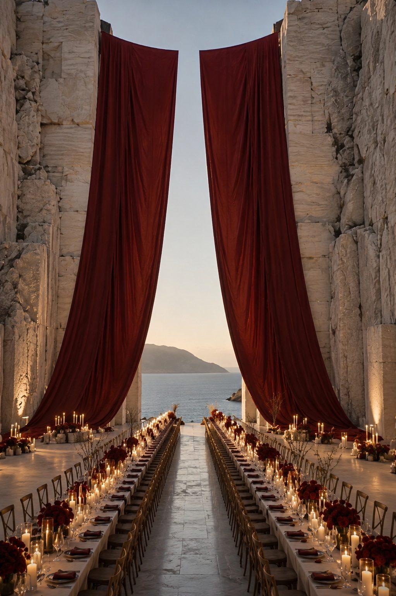
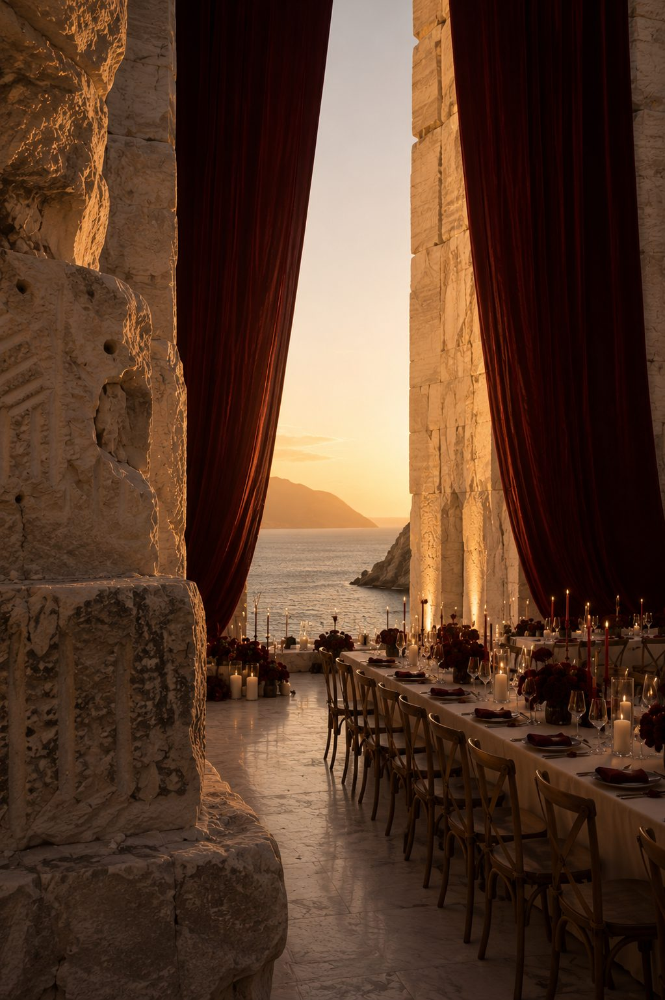
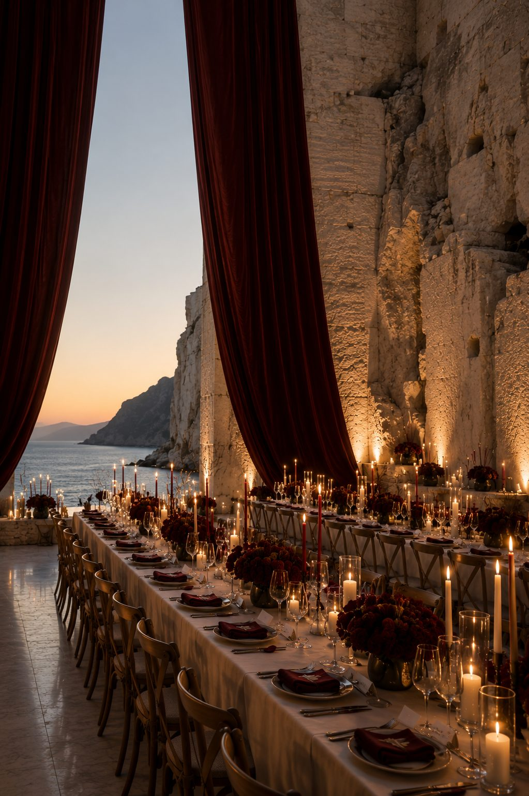
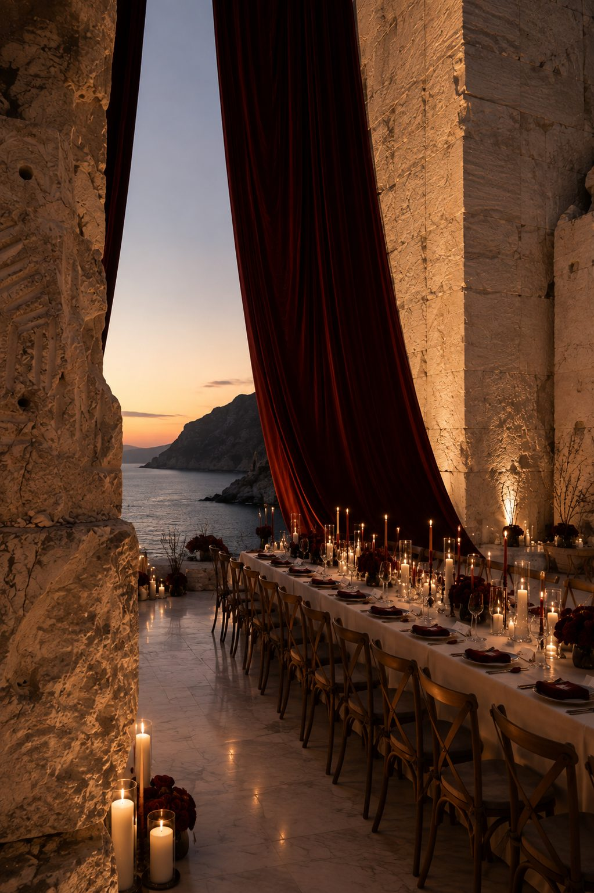
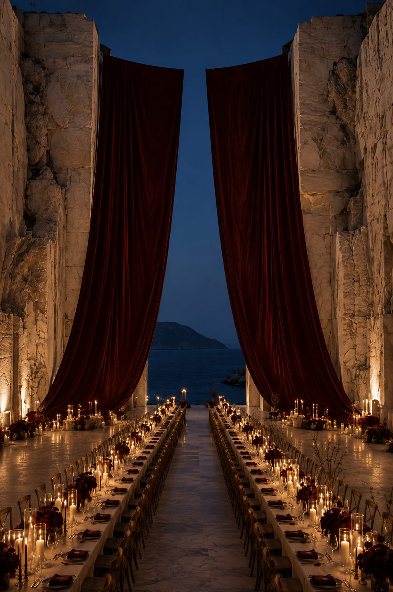
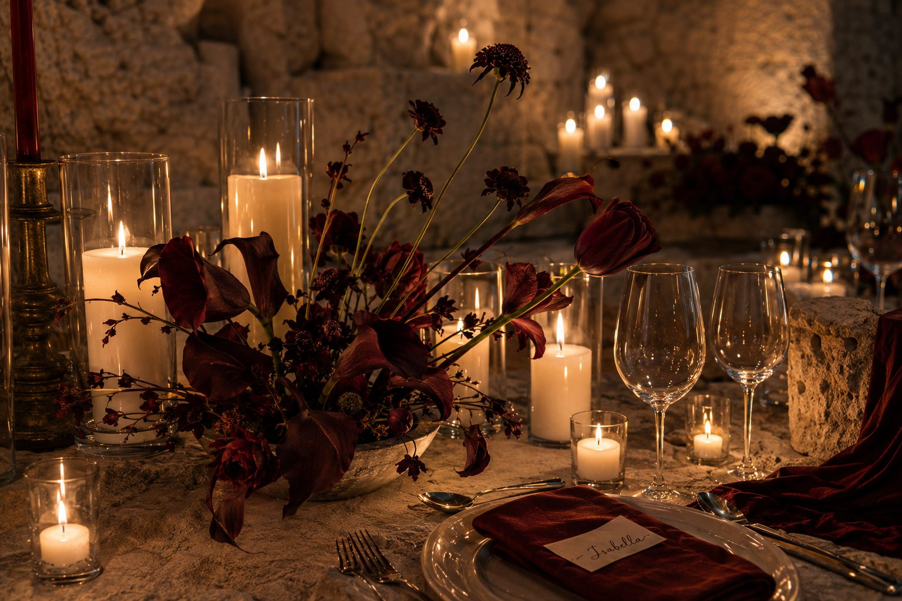
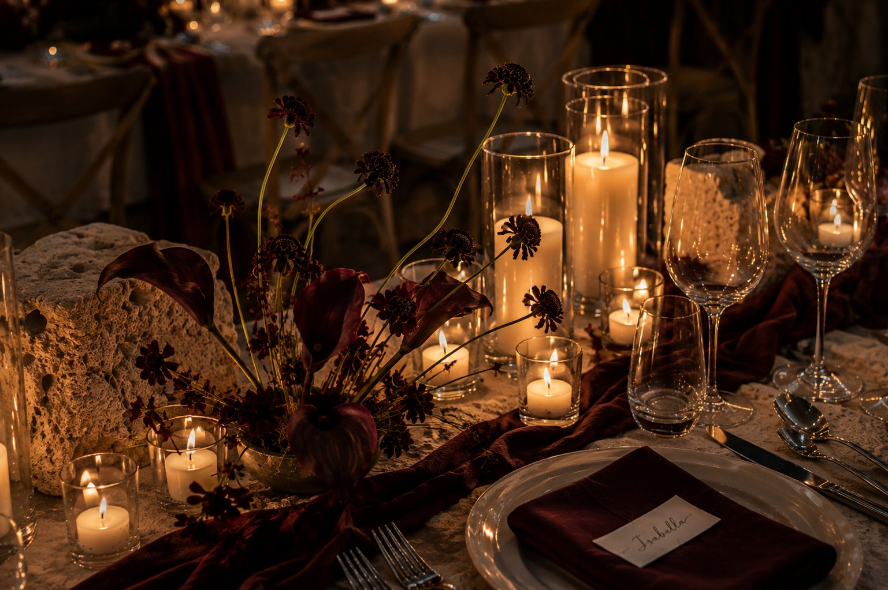

A coastal wedding world staged through stone, shadow, water and late light. The direction moves like a slow arrival: architecture first, atmosphere second, detail only when it earns its place.






